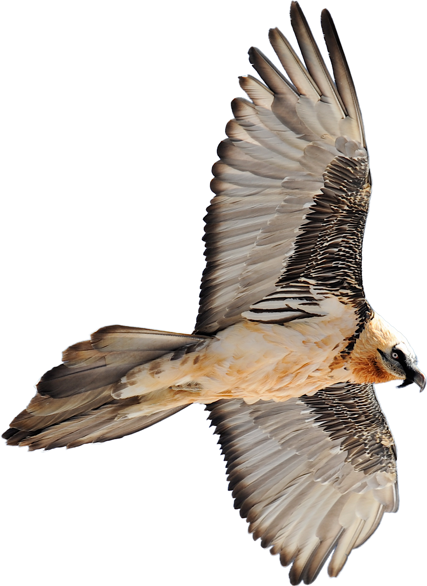
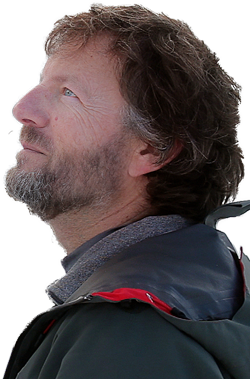

Des Gypaètes et des Hommes
Un film de Mathieu Le Lay
Un film de Mathieu Le Lay
Un voyage en plein ciel avec l'oiseau mythique des Alpes, le gypaète barbu. Plus de 30 ans après le lancement du programme de réintroduction du gypaète dans l'arc alpin, l'homme poursuit ses efforts de conservation de cette espèce emblématique. Grâce à la coopération des parcs naturels alpins et du respect désormais acquis des usagers du massif, l'oiseau de feu reconquiert peu à peu ses territoires perdus. Chaque naissance est une chance supplémentaire de survie pour ce vautour fragile et menacé. Nous partons à sa découverte et suivons son aventure aux côtés des hommes.
